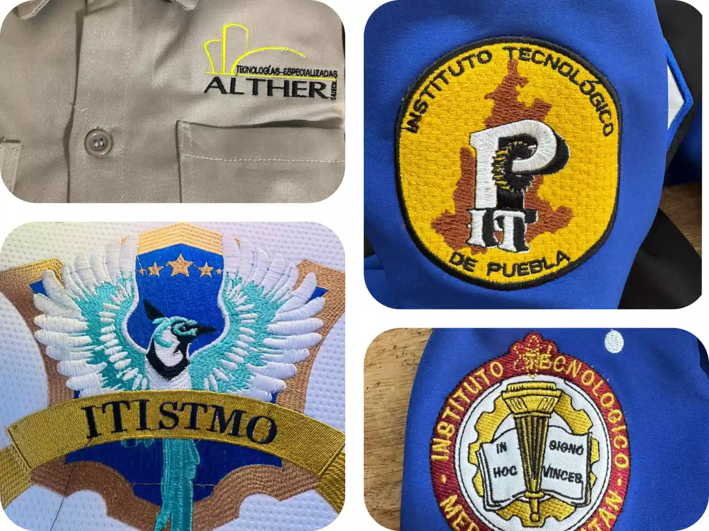
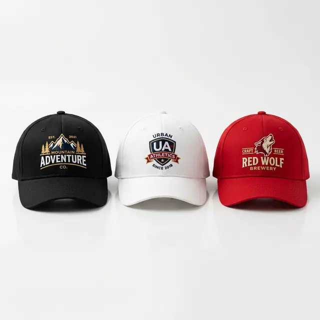
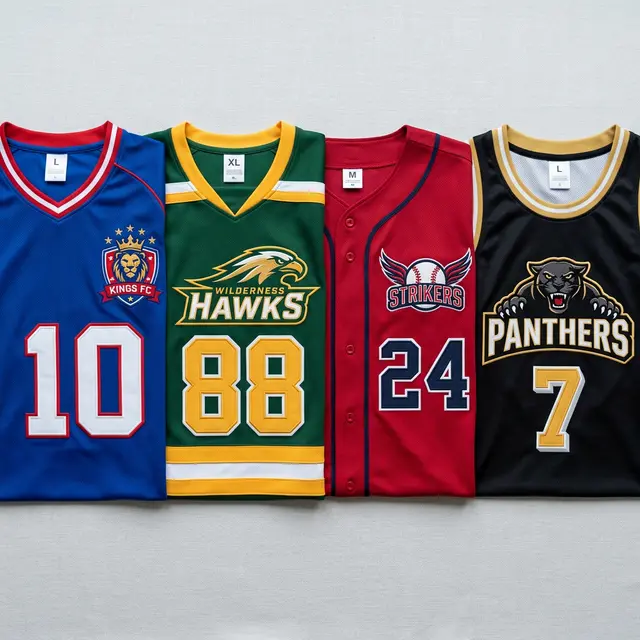

Bordados Digitales de Alta Calidad en el Istmo
Uniformes corporativos, logotipos bordados y parches personalizados con la más alta calidad técnica digital.
Bordados Escolares en Oaxaca para Todos los Niveles
Entendemos que el uniforme es el símbolo de orgullo de cada estudiante. En Bortex Bordados Juchitán, ofrecemos soluciones de bordado de alta durabilidad para todos los niveles educativos, desde Kínder, Primaria y Secundaria, hasta Bachillerato y Universidad.
Somos especialistas en personalizar batas médicas, filipinas y camisas de generación para las instituciones de educación superior más prestigiosas del estado, incluyendo el Instituto Tecnológico del Istmo, la UABJO,el EISIT,el CECEO y la UNISTMO.
- ✔ Escudos escolares de alta definición para uso rudo.
- ✔ Camisas de generación personalizadas con nombres y especialidad.
- ✔ Batas de laboratorio y uniformes clínicos resistentes a lavadas frecuentes.
Ponchado de Logotipos en el Istmo de Tehuantepec
Potenciamos la imagen de las empresas que mueven la economía de nuestra región. Realizamos la digitalización (ponchado) de logotipos con precisión milimétrica para asegurar que la identidad de tu negocio en Juchitán, Salina Cruz e Ixtepec luzca siempre profesional.
Un buen bordado corporativo eleva el prestigio de tu marca. Nuestro servicio de bordado digital en Juchitán es ideal para dotaciones de ropa de trabajo continuo en el sector industrial, gastronómico y de oficinas.
- ✔ Uniformes industriales y overoles.
- ✔ Camisas Oxford, blusas y polos institucionales.
- ✔ Gorras promocionales y empresariales.
Bordado Deportivo: Equipamiento para el Éxito
Lleva el escudo de tu equipo al siguiente nivel. Personalizamos todo tipo de prendas deportivas con hilos de alta resistencia, garantizando que el diseño soporte la actividad física más exigente sin desgastarse, ideal para el clima de nuestra región.
- ✔ Playeras Dry-Fit y equipaciones completas.
- ✔ Chamarras de equipo y sudaderas (hoodies).
- ✔ Parches termoadhesivos o para coser en uniformes de béisbol y fútbol.
Personalización Total: Bordamos tu Propia Idea
¿Tienes un diseño en mente, un dibujo propio o una imagen especial que quieres llevar contigo? ¡Nosotros lo hacemos realidad! No importa si es para un regalo único, un proyecto personal o simplemente para darle tu toque a tu ropa diaria; adaptamos tu idea con máxima precisión digital.
Podemos bordar prácticamente sobre cualquier tipo de textil para que expreses tu individualidad. Personalizamos a tu gusto: pantalones de mezclilla, camisas, playeras, gorras y hasta calcetines. Además, le damos nueva vida a tus mochilas, chamarras, toallas, mandiles y cualquier prenda de vestir que quieras hacer exclusiva.
- ✔ Desde una sola pieza: No necesitas pedir mayoreo, bordamos proyectos individuales.
- ✔ Libertad creativa: Digitalizamos la imagen, personaje, frase o logo que tú elijas.
- ✔ Versatilidad en telas: Acabados perfectos en mezclilla, algodón, poliéster, lona y más.
Nuestra Galería de Bordados
Hacemos todo tipo de trabajos desde uniformes bordados, logotipos, servilletas bordadas y parches personalizados.


